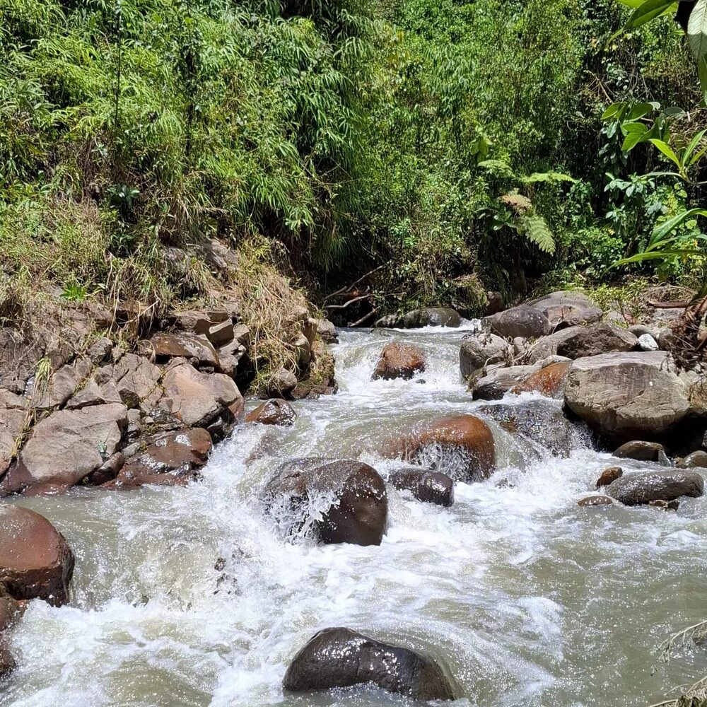

Somos una entidad sin ánimo de lucro colombiana que trabaja por la conservación del agua y los ecosistemas de la cuenca, junto a las comunidades que dependen de ellos.

Objeto social inscrito en el Registro de Entidades sin Ánimo de Lucro de la Cámara de Comercio del Cauca, acta de constitución N.º 1 del 27 de julio de 2026.
Combinamos ciencia aplicada y trabajo comunitario, porque entendemos que no hay conservación sostenible sin las personas que habitan el territorio.
Generamos información sobre el estado de los ecosistemas mediante monitoreo de fauna, seguimiento de fuentes hídricas y caracterización de coberturas, para que las decisiones de manejo se tomen con datos.
Aplicamos técnicas de restauración ecológica como la nucleación, el aislamiento de áreas en recuperación y el control de especies invasoras, favoreciendo procesos naturales de regeneración.
Acompañamos a Juntas de Acción Comunal, instituciones educativas y organizaciones locales para que la conservación sea un proceso apropiado por la comunidad y no una intervención externa.
Decisiones que cuidan el equilibrio ecológico a largo plazo.
Trabajo articulado con comunidades locales, campesinas e indígenas.
Gestión clara y verificable de cada proyecto y recurso.
Territorios preparados para adaptarse al cambio ambiental.